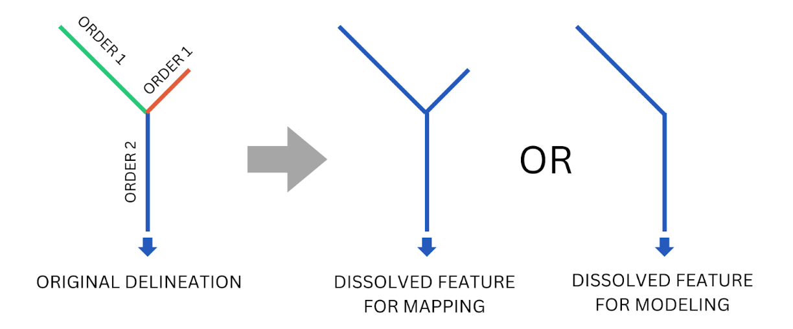
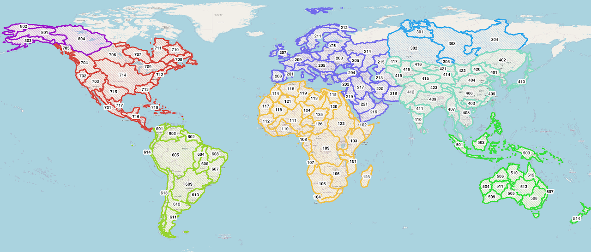

Hydrography
Terms and Vocabulary
- Hydrography: GIS datasets of hydrological features such as streams, confluence points, catchment boundaries, watershed boundaries, lake boundaries, and other features.
- Hydrofabric: hydrography.
- TanDEM-X: A SAR satellite mission from the German Aerospace Center (DLR) and Airbus Defence and Space. It is used to produce a 12-meter digital elevation model which is the highest accuracy and resolution global product of its kind. It is not publicly available but the Copernicus Glo30 and FABDEM products derived from it are.
- TDX-Hydro: A stream centerline and catchment boundary dataset produced by the National Geospatial Intelligence Agency in 2023. The streams are delineated from 12-meter TanDEM-X elevation data using TauDEM with extensive elevation preprocessing and stream centerline location correction post-processing.
- TauDEM: A terrain analysis tool used to delineate streams and catchments from elevation data.
- VPU: Vector Processing Unit. A group of 1 or more complete watersheds put together to make smaller pieces of the global hydrography dataset for convenience in distributing data, dividing computations, and making maps.
- River ID: A unique identifier for each stream centerline in the RFS hydrography dataset. GIS and hydrology software usually have different names for this ID. For example, TauDEM and TDX-Hydro uses "link number" (LINKNO) and Esri software calls it a "common identifier" (COMID). For the RFS, it is referred to as a River ID. Any references to LINKNO, COMID, ReachID, StreamID, RiverID, or any similar term should be understood as the same thing.
- Strahler Stream Order: A number for classifying rivers topologically. The smallest rivers are order 1 and when two order 1 rivers meet, they form an order 2 river. When two order 2 rivers meet, they form an order 3 river, and so on. In TDX-Hydro, the largest stream order is 9.
Overview
The RFS hydrography is a modification of the TDX-Hydro streams and catchments dataset. It comes from proprietary TanDEM-X 12-m elevation data. You can download the full dataset and review the full technical description document describing its creation at https://earth-info.nga.mil/ under the "Geosciences" tab. The full TDX-Hydro dataset has about 16 million river segments and covers the full globe in 62 pieces corresponding to HydroBASINS level 2. We skipped 12 regions and representing islands or the farther north land areas. Additional, many revisions to reduce the stream feature count and optimize the network for channel routing reduce the total number of rivers to a total of 6.25 million rivers. This version used in RFS is available for users to download and use for their own purposes. This dataset is referred to as hydrography, hydrofabric, or river network. It is vector data with points and lines with coordinates, not grid data, and it includes four main components:
- The exact stream center lines used in RFS. Each stream has a unique 9 number ID which is referred to as a reachID, link number, or stream ID. This is the file called "streams_{vpu}.gpkg".
- The catchment boundaries used RFS. There are the boundaries around each of the streamlines and represent the area connected to that streamline. It is identified using the same link number as the stream center lines. This is the file called "catchments_{vpu}.spatialite". Each stream centerline corresponds to exactly one unique catchment boundary.
- The connection points used in RFS where different stream centerlines connect. Each point has the an attribute called DSLINKNO which represents the one downstream link number for each of the points. It has another attribute called USLINKNOs. This is a comma seperated list of the link numbers upstream of the nexus point. This is the file called "nexus_{vpu}.gpkg".
- The merged lake catchments used in RFS to represent the locations of lakes. Stream catchments that were identified through GIS searching to be part of a lake were merged to present the lakes. Therefore, it will have a different shape than the actual lake boundary based on the shapes of the merged stream catchments. This is the file called "lakes_{vpu}.gpkg".
Modifications to TDX-Hydro
All the modifications we performed on each TDX-Hydro region are recorded in 3 files: 1) processing_options.xlsx, 2) tdx_header_numbers.json, and 3) terminal_node_vpu_list.csv. The TDX header number JSON file maps every TDX-Hydro region number to a unique 2-digit number, with the first digit being the first digit of the region number, and the second digit corresponding to the index of the sorted order of all the regions that share the first digit. The terminal node vpu CSV matches every terminal node (the id associated with the outlet of a watershed) with a VPU number. An overview of these changes are included here.
The regions that were excluded include those that are farther north and some of the smaller islands, where runoff datasets may not be as accurate and there is sparser or no population. Future versions may reintroduce these regions. Additionally, we corrected errors found in TDX-Hydro dataset which were reported to the NGA for correction in future versions. These errors include:
- Streams that have no length and no upstream/downstream segments, i.e. streams where there are only two points and both points are the same location. These, along with any associated catchments, were removed.
- Streams that have no length with upstream or downstream segments. These were removed along with any associated catchments, and the attributes of the upstream and/or downstream segments were modified to refer to each other and preserve the stream network's connectivity.
- Catchments with a stock identifier of '0' never had an associated stream. These were deleted.
For most, but not all, of the regions, the headwaters streams were dissolved with the downstream segments, up to and including the downstream segment with a Strahler stream order of either 2 or 3. It was decided that regions that were largely coastal (Japan, Carribean islands, Indonesia) were more sensitive to changes in their stream networks, and so these regions did not have their headwaters modified. Other areas, such as the Saharan desert, were delineated to the same resolution as the rest of the world -- often too much resolution. In these areas, more features could be merged without significantly altering the river routing. Thus, the headwaters and downstream streams were dissolved into one feature along with their associated catchments, and relevant attributes such as length and slope were recomputed. The stream order to which the headwaters would be dissolved was also chosen based on these considerations.

Small watersheds up to 200 square kilometers were removed from the TDX-Hydro dataset for all regions. This was done for similar reasons as the differing headwater stream dissolving. The more coastal regions had watersheds between up to 25 and 75 square kilometers dropped. Other areas, like the Saharan desert or northern Canada, had watersheds of 200 square kilometers dropped. In these flatter regions, the high resolution of the delineation creates little "pools" or small collections of streams that do not drain to the ocean and do not represent flowing streams. They often collectively have an area of less than 200 square kilometers. For the less coastal and flatter/drier regions, bigger watersheds were dropped.
Headwater streams that led directly into a stream with a Strahler stream order of two or greater were dissolved with the immediate downstream segment for most, but not all, of the regions. The decision to prune these streams are the same as above.
VPUs
The GIS data are divided into 125 smaller pieces, VPUs. This makes the large quantity of data easier to manage and access. Each VPU represents one or more complete watersheds.

The VPU boundaries are also available for download to help identify which VPU includes a user's area of interest. The other GIS data sets should be downloaded based on the VPU of interest and are downloaded as an entire VPU.
Available Metadata
The V2 streams have the following attributes, which come from the TauDEM delineation process. For more explanation of these attributes, please check TauDEM Documentation.
| Attribute | Source | Description |
|---|---|---|
| LINKNO | TDX-Hydro | A 9 digit globally unique ID number for that river. |
| DSLINKNO | TDX-Hydro | The ID (LINKNO) of the river immediately downstream of that river. |
| strmOrder | TDX-Hydro | The Strahler stream order. |
| USContArea | TDX-Hydro | The total drainage area upstream of the most upstream point. |
| DSContArea | TDX-Hydro | The total drainage area upstream of the most downstream point. |
| LengthGeodesicMeters | RFS V2 | Geodesic length of the river arcs in meters. |
| TDXHydroRegion | RFS V2 | The original TDX regional group number of which this stream is part. |
| TopologicalOrder | RFS V2 | The order that streams occurs from headwater to outlet. |
| Musk_k | RFS V2 | The initial Muskingum k parameter calculated for river routing. |
| Musk_x | RFS V2 | The initial Muskingum x parameter calculated for river routing. |
| TerminalLink | RFS V2 | The ID of the final outlet of this stream's watershed. |
| VPUCode | RFS V2 | A three-digit number representing which RFS VPU region this stream is in. |